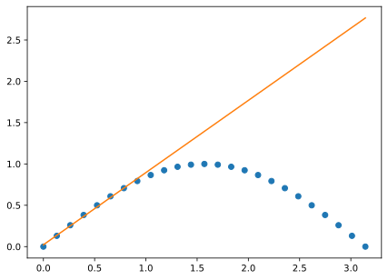

Il termine vettorizzazione può avere significati radicalmente diversi a seconda del contesto. Un titolo più preciso (e prolisso) per questa sezione potrebbe essere: “programmazione orientata agli array in numpy”.
Guardiamo per un attimo il frammento di codice che segue, in cui sommiamo (di nuovo, e in due modi diversi) i numeri interi da \(1\) a \(1000\).
import numpy as np# Create an array with all the integer values from 1 to 1000 (included)values = np.arange(1, 1001)# Sum the values in the array with a good, old for loop.s =0for i in values: s += iprint(s)# Remix: use numpy vectorization facilities.s = np.sum(values)print(s)
500500
500500
Esaminiamo le differenze: nel primo caso abbiamo fatto un loop for, mentre nel secondo abbiamo utilizzato la funzione sum() di numpy. Il risultato è invariato per cui, evidentemente, abbiamo fatto la stessa operazione matematica—ma quale dei due approcci è consigliabile usare nella vita reale?
Facciamo un altro esempio. Supponiamo di lanciare un dado \(N\) volte ottenendo le occorrenze \(o_i~(i = 1 \ldots 6)\) e di voler fare un test del chi quadro per verificare se abbiamo evidenza che il dado non sia equo \[
\chi^2 = \sum_{i=1}^{6} \frac{(o_i - e_i)^2}{e_i}
\quad\text{con}\quad
e_i = \frac{N}{6}.
\] Anche in questo caso possiamo procedere in (almeno) due modi diversi (e anche in questo caso, va da sé, il risultato è lo stesso).
(Ne abbiamo approfittato per gettare nel mix la funzione builtin zip()—può essere utile, vale la pena dare un’occhiata.)
Sembrerebbe quasi che ogni volta che facciamo un ciclo for in Python ci sia un’opportuna combinazione di operazioni di numpy che ci permette di fare esattamente la stessa cosa. Più specificamente queste operazioni possono prendere la forma di
Questa tecnica va genericamente sotto il nome di vettorizzazione. La domanda, anche in questo caso, è quella che ci siamo fatti prima: quali sono le differenze, e cosa è meglio usare?
13.1 Vettorizzare è compatto
La prima cosa che notiamo è che la notazione vettorizzata (quella, cioè, in cui utilizziamo le funzioni di numpy) è più compatta di quella standard (in cui usiamo solo Python puro). In entrambi gli esempi che abbiamo visto in questo capitolo abbiamo sostituito tre linee di codice con una. Non male—la compattezza, ove non spinta alle estreme conseguenze, è una buona cosa.
Avviso
Non pensate, però, che scrivere buon codice sia solo una questione di minimizzare il numero di linee o il numero di caratteri per riga. Oltre un certo limite la compattezza diventa offuscamento, e se siete interessate ad un breve diversivo in questo senso vi consiglio questo. Pensate invece al buon codice come quello che è facile da leggere.
13.2 Vettorizzare può essere espressivo
Ad un esame più approfondito, c’è un’altra cosa che balza all’occhio: in molti casi vettorizzare un problema rende il codice più vicino al modo in cui lo formalizzeremmo attraverso equazioni su un foglio di carta. Ove questo succede, un programma vettorizzato tende ad essere più espressivo della sua controparte non vettorizzata, nel senso che è più facile per una persona capire cosa fa il codice.
Supponiamo di voler verificare numericamente la corretta normalizzazione della distribuzione binomiale \[
\sum_{k=0}^{n} \binom{n}{k} p^{k} (1 - p)^{n - k} = 1
\] per una coppia fissata di valori di \(n\) e \(p\). Se torniamo per un attimo ad un mondo in cui non esistono numpy e scipy (che, abbiamo capito, sono gli strumenti naturali di vettorizzazione in Python) la cosa più semplice che potremmo fare sarebbe qualcosa del tipo
import mathn =100p =0.25norm =0.for k inrange(n +1):# Calculate the logarithm of the binomial coefficient log_bin = math.lgamma(n +1) - math.lgamma(k +1) - math.lgamma(n - k +1)# Sum the remaining part to get the logarithm of the actual probability log_prob = log_bin + k * math.log(p) + (n - k) * math.log(1- p)# Exponentiate to get the actual probability prob = math.exp(log_prob)# Increment the normalization sum norm += probprint(norm)
0.9999999999999734
(Notate che, come raccomandato nel capitolo Capitolo 11, siamo passati ai logaritmi nel ciclo per evitare possibili errori numerici nel calcolo di fattoriali e potenze. Anche così facendo il risultato è corretto solo nelle prime 13 cifre significative.)
Fermatevi un attimo a guardare il nostro programma. Anche spezzando il calcolo in termini di operazioni elementari, e commentando le linee di codice una per una, la cosa è ancora abbastanza indigesta, vero? E se invece ci ricordiamo di tutto quello che abbiamo imparato su numpy e scipy?
import numpy as npfrom scipy.stats import binomn =100p =0.25k = np.arange(n +1)norm = np.sum(binom.pmf(k, n, p))print(norm)
1.0
Wow—confrontate i due frammenti e ditemi se il secondo, oltre a essere più conciso, non è anche più facile da leggere!
Nota
Le più attente tra voi avranno notato una cosa che è importante sottolineare: mentre con il loop for non allochiamo essenzialmente nessuna memoria, a parte quella strettamente necessaria per le poche variabili necessarie, nella versione vettorizzata dobbiamo per definizione allocare all’inizio l’intero array. (In questo caso sono \(100\) elementi, per cui non è un problema, ma con quantità di dati molto più grandi il footprint in memoria può diventare una cosa di cui preoccuparsi.)
C’è anche da dire che, in generale, quando abbiamo a che fare con container di numeri usare i tipi nativi di Python tende ad occupare molta più memoria rispetto agli array di numpy, ed in molte applicazioni la memoria non è un problema comunque. Morale: siete avvertite del potenziale problema, e la scelta va fatta caso per caso.
13.3 Vettorizzare è veloce
C’è una cosa importante che non ci siamo mai detti, ed è arrivato il momento di fare ammenda per questa mancanza: i loop in Python sono orrendamente lenti. Mandatelo a memoria e non dimenticatelo, perché prima o poi, vi assicuro, vi tornerà utile.
Questo ci porta naturalmente a farci una domanda che non ci eravamo ancora chieste: come faccio a misurare il tempo necessario per eseguire un’istruzione o un programma? Ci viene in aiuto il modulo time di Python, ed in particolare la funzione time.time(), che restituisce il numero di secondi trascorsi dal 1 gennaio, 1970, alle 00:00. (L’origine dei tempi è irrilevante, perché le differenze di tempo sono invarianti per traslazione.) Allora proviamo a sommare i numeri interi da uno a un milione, e vediamo quanto ci impieghiamo, nella versione semplice ed in quella vettorizzata.
import timeimport numpy as npvalues = np.arange(1, 1000001)# Sum all the values in the array with a for loop.t0 = time.time()s =0for value in values: s += valuedt = time.time() - t0print(f"Sum: {s}. Elapsed time: {dt:.5f} s")# Do a vectorized sum.t0 = time.time()s = np.sum(values)dt = time.time() - t0print(f"Sum: {s}. Elapsed time: {dt:.5f} s")
Sum: 500000500000. Elapsed time: 0.10943 s
Sum: 500000500000. Elapsed time: 0.00046 s
Il risultato specifico, ovviamente, dipende da molte cose, tra le quali il computer che state usando, ma il messaggio è chiaro: quando si tratta di processare numeri non è raro che numpy batta Python di due ordini di grandezza in velocità. Fermatevi un attimo a pensare—passare da \(1\) ms a \(10~\mu\)s non è particolarmente eccitante, ma se diciamo che un programma che prima impiegava un’ora adesso impiega \(40\) secondi, questa è una notizia!
Nota
Abbiamo semplificato troppo, anche se il risultato è ragionevole. In generale capire il timing di un programma è una cosa non banale, che si presta facilmente ad errori—in particolare può cambiare considerevolmente da chiamata a chiamata, per cui in genere provare una sola volta non basta per avere una misura solida. Se doveste trovarvi a profilare professionalmente un programma, date un’occhiata al modulo timeit della libreria standard!
A questo punto è legittimo chiedersi: cosa può mai fare di magico numpy per andare così più veloce del Python puro? La questione è interessante e, anche se non possiamo sviscerarla nel dettaglio, merita un breve commento. Per prima cosa, tutte le chiamate di numpy che abbiamo visto in questo capitolo, implicitamente, eseguono un ciclo. Il vero punto dirimente è che numpy è scritto (per la maggior parte) in C, non in Python, per cui quando deleghiamo a numpy, questo ciclo viene eseguito in C ed è significativamente più veloce.
Tristemente, stiamo toccando con mano il fatto che niente è gratis: tutte le comodità che Python ci offre off the shelf (il fatto di non dover dichiarare le variabili e di poter cambiare il tipo a runtime, la facilità nel fare container eterogenei) le paghiamo (e talvolta caramente) in alcune aree, e.g., la velocità dei cicli. In C l’elasticità del linguaggio è molto più bassa, ed il compilatore può sfruttare tutti i vincoli aggiuntivi per prendere decisioni ed ottimizzare il programma compilato.
Questo vuol dire che Python è inutile? Assolutamente no, perché se il vostro programma arriva al termine in un batter d’occhio, non vi interessa se questo batter d’occhio è \(1\) ms o \(1~\mu\)s—quando premete invio vedete istantaneamente il risultato e questo è quello che conta. Nei casi in cui questo non succede, ed è vantaggioso ottimizzare, gli array di numpy offrono una strada (non l’unica) percorribile praticamente con minimo sforzo.
Questa breve discussione mette in luce anche un’altra questione fondamentale: il guadagno in velocità che otteniamo vettorizzando non è dovuto al fatto che abbiamo scritto meno righe di codice. Il modo più semplice per convincersene è guardare questa leggera variazione sul tema:
Sum: 500000500000. Elapsed time: 0.05923 s
Sum: 500000500000. Elapsed time: 0.00044 s
Qui la differenza è talmente sottile che abbiamo messo i numeri di linea per evidenziarla: confrontate le righe \(8\) e \(14\): il builtin sum di Python è circa due volte più veloce di un ciclo for esplicito (per motivi che non abbiamo il tempo di spiegare) ma ancora due ordini di grandezza più lento che non la funzione corrispondente in numpy. Entrambe le chiamate sono esattamente una riga di codice.
13.4 Vettorizzare condizionatamente?
Se ricordate, originariamente abbiamo introdotto i cicli for e while subito dopo le espressioni condizionali, nel capitolo Capitolo 6. Arrivati qui, questo ci fa venire un piccolo brivido: non è per caso che, vettorizzando, abbiamo perso la possibilità di mettere if statement nel flusso del nostro programma? Non è che, adesso che abbiamo imparato ad andare velocissimi, cose semplici dentro un ciclo for tipo “prendiamo solo i numeri pari”, diventano improvvisamente impossibili? Perché, se così fosse, allora forse non abbiamo fatto proprio un buon affare…
La risposta, se ci pensate un attimo, sta nel fatto che i contenitori si possono indirizzare, e numpy ha messo una certa quantità di ingegno nei modi in cui ci permette di farlo. Vogliamo un array con i numeri pari minori di \(40\)? Niente di più semplice!
import numpy as npvalues = np.arange(40)values = values[values %2==0]print(values)
creiamo un array con tutti i numeri interi fino al massimo desiderato;
quando calcoliamo un’espressione logica su un array, il risultato è un array della stessa dimensione di quello di partenza in cui ogni singolo elemento ci dice se l’elemento corrispondente dell’array di partenza soddisfa o meno la condizione—questo secondo array lo chiamiamo comunemente una maschera, o mask in inglese (ed ecco che le variabili booleane che abbiamo visto nel capitolo Capitolo 4 ci tornano improvvisamente utili);
questa maschera si può utilizzare, e qui viene il bello, per filtrare gli elementi dell’array di partenza.
Ecco che abbiamo riguadagnato la capacità di fare logica vettorizzata! Vediamo la cosa in opera in un contesto più familiare—come potremmo sfruttare la cosa a nostro vantaggio per fittare un sottoinsieme dei punti in un array di dati?
import numpy as npfrom matplotlib import pyplot as pltfrom scipy.optimize import curve_fitdef line(x, m, q):return m * x + q# Plot the data in their full range.x = np.linspace(0., np.pi, 25)y = np.sin(x)plt.plot(x, y, "o")# Create a mask to fit the values smaller than 1.mask = x <1.popt, pcov = curve_fit(line, x[mask], y[mask])plt.plot(x, line(x, *popt))

Facile, no?
13.5 E quindi?
Bella domanda. Utilizzare array di numpy è un modo ovvio per esprimere una classe di problemi in modo conciso, espressivo, e veloce. Un ciclo for, in generale, si presta banalmente ad essere vettorizzato utilizzando array, e le espressioni condizionali nel flusso del programma si possono implementare nella forma di maschere.
Quindi da qui in avanti dobbiamo vettorizzare tutto? Non è detto! Se il numero di elementi su cui iteriamo è molto piccolo, l’overhead per importare numpy potrebbe essere maggiore del tempo che risparmiamo. Alcuni costrutti non si prestano banalmente ad essere vettorizzati—il ciclo while è un esempio tipico, perché se non so in anticipo quante volte debbo ripetere un’operazione, come faccio ad allocare un array delle dimensioni opportune? In alcuni casi, infine, un ciclo esplicito risulta semplicemente più naturale. La decisione è vostra, e dovete prenderla volta per volta, a seconda del problema che avete davanti.
Premature optimization is the root of all evil. Parole sante—tenetelo a mente e lasciatevi guidare.